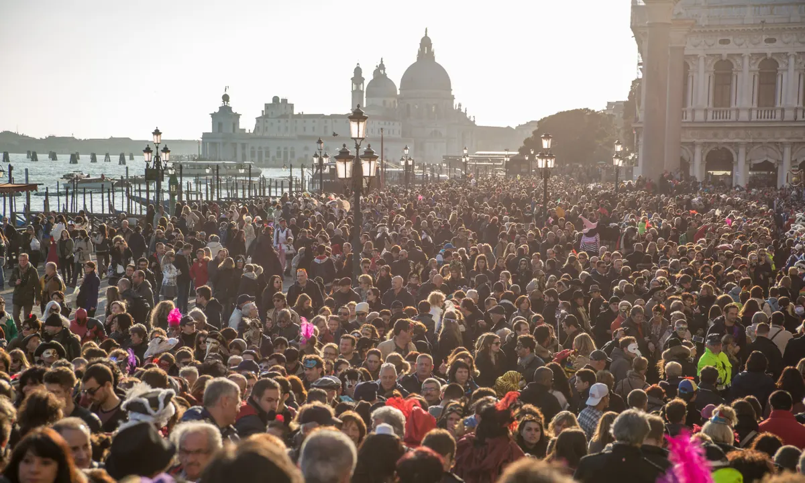
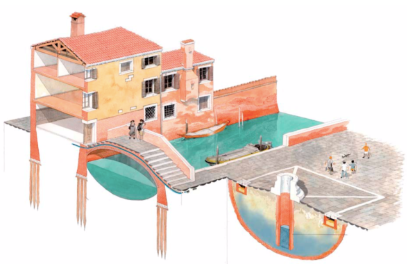
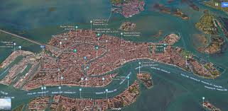
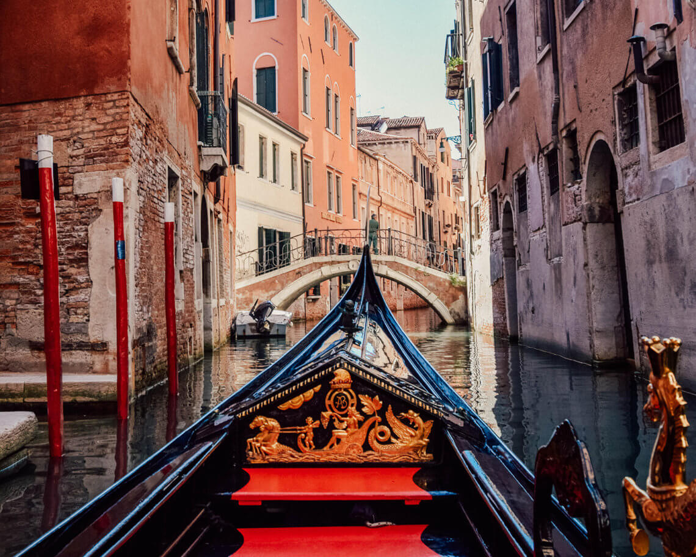

Information about Venice!

Travel in Venice!
“Venice is one of the most important tourist destinations in the world for its celebrated art and architecture. The city has an average of 50,000 tourists a day and in 2006, it was the world's 28th most internationally visited city, with 2.927 million international arrivals that year.” (“10 Reasons to Visit Venice”)

Venice Was Created on Wood?!
"Before Venice became what we know it is today, the area was a muddy, marshy lagoon with all the islands spread across its swampy plains. To transform it into the floating city that it’s now known as, early settlers had to drain the lagoon and dig the canals. They installed wooden stakes, or logs, to line them and create a barrier, which also lay on hard clay beneath. They then built wooden platforms on top of the stakes and put stone on top of those. Venice’s buildings are built on these foundations. How has the wood endured the years? You might think the material would have decayed, leaving the whole city to crumble into the canals. In fact, the water around Venice is low in oxygen and so the conditions aren’t viable for microorganisms that may break down the wood. What’s more, the saltwater has meant that salt and other minerals have been absorbed, hardening the wood into a stone-strength material."(The Local Italy)

118 islands make Venice!
"The city of Venice is actually made up of a number of different islands, each with different characters and landmarks. Connected by 400 bridges and 170 waterways, these islands, nestled in a calm coastal lagoon, give Venice its unique charm. As you walk around, it’s easy to forget they are separate islands, as it feels like one city’s land mass. As you explore, I recommend pausing for a moment to appreciate just how much water there is around! It’s incredible to think these buildings have been constructed here really…Today, the city and its islands are a UNESCO World Heritage site, and one of the most popular destinations to visit in Europe."(https://www.facebook.com/wanderlustchloe)

The gondolas in Venice are required BY LAW to be black!
"One of the most interesting facts about Venice and its gondolas is that these historic boats have to be painted completely black. This archaic law was designed to reduce unfair competition between the city’s many gondoliers. Today, gondoliers decorate the inside of their gondolas with bright colours, padded seats and pretty extras to make them stand out from the crowds." (https://www.facebook.com/wanderlustchloe)